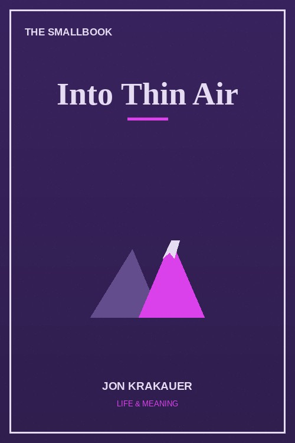

Library › Authors › Jon Krakauer
Books by Jon Krakauer
Jon Krakauer has one book in the library. Every book here is read down to the big idea, the lessons, the lines worth keeping and the actions worth taking. Start with the summary, then buy the full book if it earns a place on your shelf.

Into Thin Air
1997 · 9 min · 8 lessons
Jon Krakauer went to Everest to write about the commercialisation of the mountain. He came down from a night in which eight people died, and wrote the defining account of how ambition, money and thin air conspire.
Jon Krakauer, a journalist and climber, joined Rob Hall's Adventure Consultants expedition in spring 1996 to report on Everest's commercial era. The book reconstructs the summit day of 10 May: the queues at the Hillary Step, ignored turnaround times, a storm arriving as exhausted climbers descended, and the deaths of eight people including guides Rob Hall and Scott Fischer. It is also an examination of the system that put paying clients of wildly varying ability on a mountain where, above 8,000 metres, judgement...
Lessons in the summary
- Turnaround Time Is the Rule That Matters Only Once
- Above 8,000 Metres, Everyone Is Alone
- The Queue at the Hillary Step
- Summit Fever Is a Team Disease
- The Clients Who Lived Questioned the Product
- Jon Krakauer's Own Account Settles Nothing, Which Is the Point
- The Genre His Book Invented Argues With Itself
- What the Mountain Charges Now
Lines worth keeping
- The summit is just a halfway point.
- Everest is not a place where you can afford to make mistakes.
- I quickly came to understand that climbing Everest was primarily about enduring pain.
Questions Jon Krakauer helps answer
Read nearby authors next
- Viktor E. Frankl 2 books
- Elie Wiesel 1 book
- Frederick Douglass 1 book
- Joan Didion 1 book
- Khaled Hosseini 1 book
- Matt Haig 1 book
- Michael Ovitz 1 book
- Mitch Albom 1 book